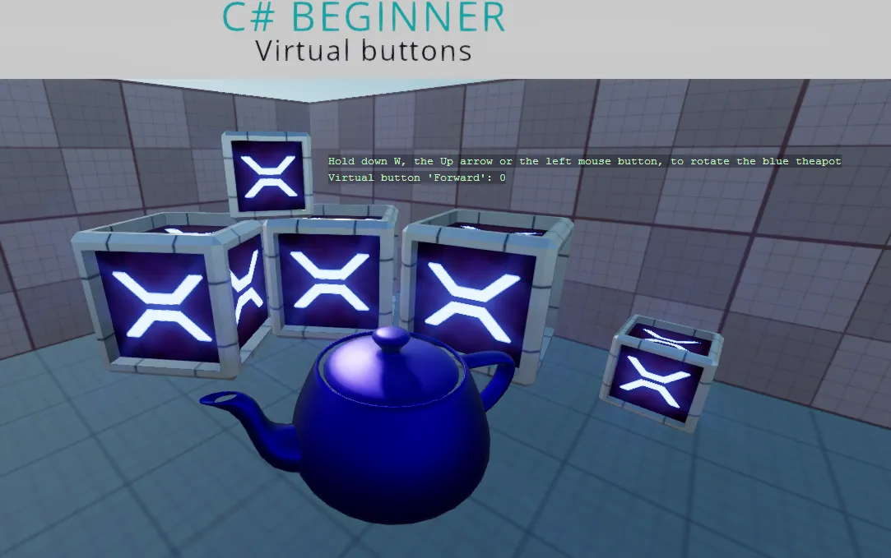

Virtual buttons
You can find this sample in the tutorial project: Menu → Virtual buttons
Explanation
This C# Beginner tutorial covers how to create virtual buttons.
Lets say that you want a player to jump when a key is pressed. The space bar is a common option, but what if a gamer wants to have a different key bind to this 'Jump' action?
The answer here is the 'Virtual button'. Virtual buttons allow the mapping of one or more keyboard keys, mouse buttons or joystick buttons to a single 'Virtual button'. We can check for the name of that virtual button to see if any of the virtual buttons are triggered.

Code
using Stride.Core.Mathematics;
using Stride.Engine;
using Stride.Input;
namespace CSharpBeginner.Code
{
/// <summary>
/// This script demonstrates how to create virtual buttons and how to use them.
/// <para>
/// https://doc.stride3d.net/latest/en/tutorials/csharpbeginner/virtual-buttons.html
/// </para>
/// </summary>
public class VirtualButtonsDemo : SyncScript
{
public Entity BlueTeapot;
public override void Start()
{
// Create a new VirtualButtonConfigSet if none exists.
Input.VirtualButtonConfigSet = Input.VirtualButtonConfigSet ?? new VirtualButtonConfigSet();
// Bind the "W" key and "Up arrow" to a virtual button called "Forward".
var forwardW = new VirtualButtonBinding("Forward", VirtualButton.Keyboard.W);
var forwardUpArrow = new VirtualButtonBinding("Forward", VirtualButton.Keyboard.Up);
var forwardLeftMouse = new VirtualButtonBinding("Forward", VirtualButton.Mouse.Left);
var forwardLeftTrigger = new VirtualButtonBinding("Forward", VirtualButton.GamePad.LeftTrigger);
// Create a new virtual button configuration and add the virtual button bindings
var virtualButtonForward = new VirtualButtonConfig
{
forwardW,
forwardUpArrow,
forwardLeftMouse,
forwardLeftTrigger
};
// Add the virtual button binding to the virtual button configuration
Input.VirtualButtonConfigSet.Add(virtualButtonForward);
}
public override void Update()
{
// We retrieve a float value from the virtual button.
// When the value is higher than 0, we know that we have at least one of the keys or mouse pressed
// Keyboard and mouse return a value of 1 if they are being pressed.
// Gamepads can have a more accurate value between 0 and 1 depending on how far a trigger is being pressed
var forward = Input.GetVirtualButton(0, "Forward");
// Note: Gamepad sticks can be a negative value. For this example we only check if the value is higher than 0
if (forward > 0)
{
var deltaTime = (float)Game.UpdateTime.Elapsed.TotalSeconds;
BlueTeapot.Transform.Rotation *= Quaternion.RotationY(0.6f * forward * deltaTime);
}
DebugText.Print("Hold down W, the Up arrow the left mouse button or the Left trigger on a gamepad", new Int2(600, 200));
DebugText.Print("Virtual button 'Forward': " + forward, new Int2(600, 220));
}
}
}